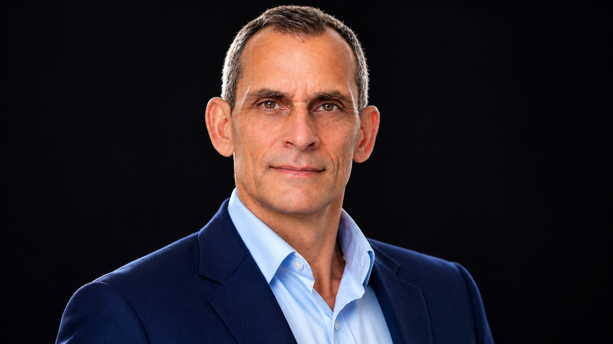

Operational Reliability
& Decision Architecture
More than 30 years of practical experience in marine engineering, offshore operations, FSO/FPSO environments and operational problem-solving. Focused on asset reliability, operational execution and human decision-making.
Professional Focus
Operational Experience
Marine engineering, offshore production, FSO cargo operations, control-room coordination and technical operations.
Asset Recovery
Practical problem-solving, technical coordination, equipment condition observation and restoration of operational capability.
Decision Architecture
Independent research into decision ownership, intervention authority, escalation and structural integrity in high-risk operations.
Selected Case Study
From Decommissioning to 12 More Years of Service
Led the recovery effort for a 1972 port tug that had become immobilised and was being considered for decommissioning. Following restoration and successful sea trials, the vessel returned to service and continued operating for another 12 years.
Explore the case study →Professional Experience
Systems structure reality.
Humans remain sovereign.
AVCS — Independent Research & Development
Adaptive Vector Control System
AVCS is a proprietary framework in development for examining the structural integrity of decision-making in high-risk operational environments.
Its development focuses on decision ownership, intervention boundaries, operational clarity and the relationship between human responsibility and engineered intelligence.
AVCS SIM LIGHT
Explore the AVCS diagnostic approach through its public demonstration interface.
Explore AVCS SIM LIGHT →The demonstration is a research and diagnostic interface. It does not constitute independent certification or validated operational assurance.